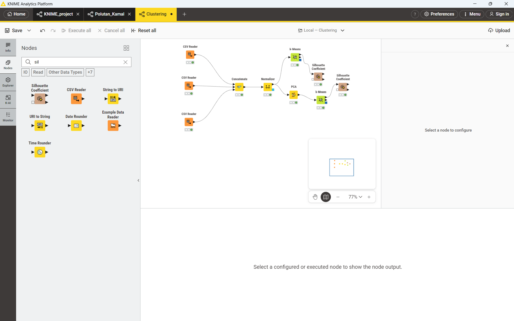
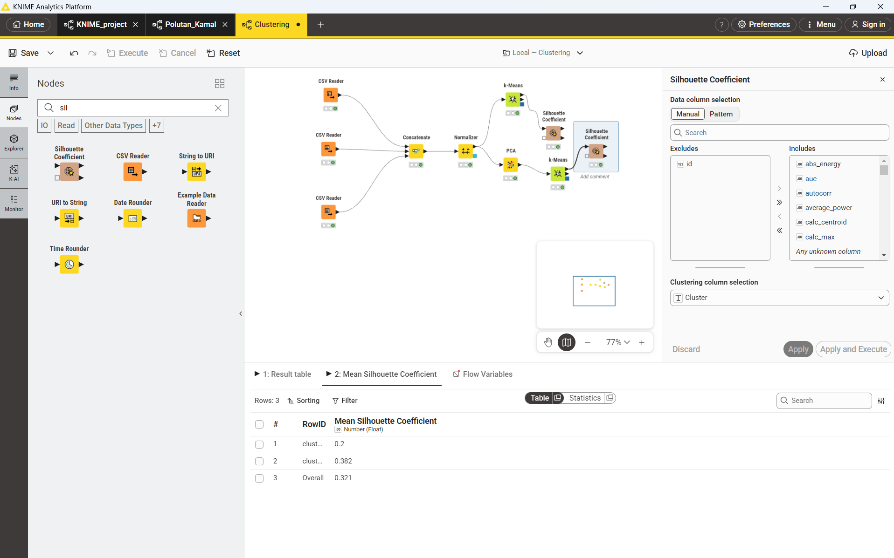
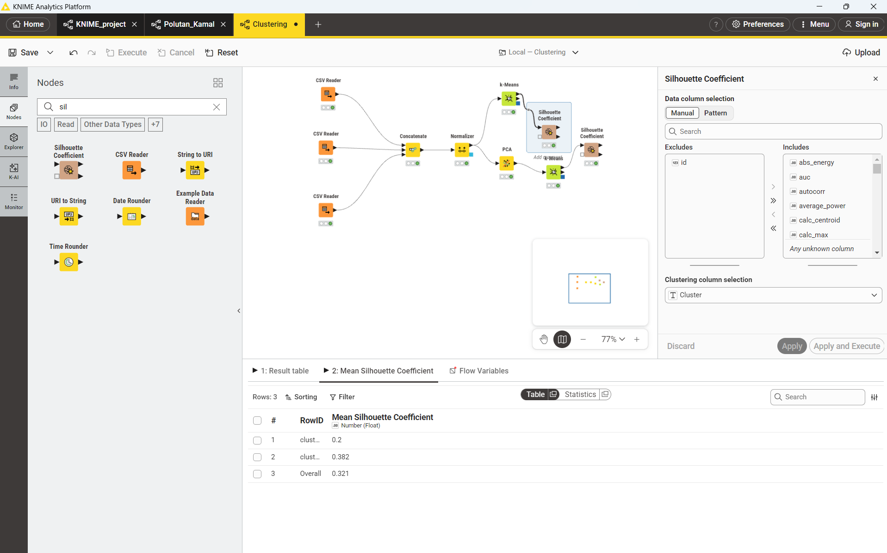

Bagian 3: Pemodelan Machine Learning & Evaluasi K-Means#
1. Penggabungan dan Standarisasi Data#
Penggabungan Data Polutan#
Pada tahap ini, tiga dataset hasil ekstraksi fitur TSFEL, yaitu CO, NO2, dan SO2, digabungkan menjadi satu dataset menggunakan proses concatenation. Penggabungan dilakukan agar seluruh data dari satu kelas analisis dapat diproses dan dianalisis secara bersamaan menggunakan algoritma clustering.
Ketiga dataset tersebut memiliki karakteristik fitur yang sama, yaitu berupa fitur-fitur statistik dan karakteristik time series yang telah diekstraksi menggunakan TSFEL. Dengan menggabungkannya, data dapat dipandang sebagai satu kesatuan observasi yang memiliki 68 fitur yang sama untuk setiap sampel.
Proses penggabungan juga memungkinkan K-Means untuk mencari pola atau struktur kelompok berdasarkan kesamaan karakteristik fitur, bukan berdasarkan asal polutan. Dengan demikian, proses clustering tetap bersifat unsupervised learning, karena label polutan tidak digunakan sebagai variabel yang menentukan pembentukan cluster.
Pada implementasinya, kolom non-numerik maupun kolom identitas seperti nomor atau NIM tidak digunakan sebagai fitur clustering. Label polutan juga hanya dapat digunakan sebagai informasi pendukung atau visualisasi dan tidak menjadi input utama K-Means.
Standarisasi Data#
Sebelum melakukan PCA maupun K-Means, data dinormalisasi menggunakan StandardScaler. Tahap ini penting karena 68 fitur yang dihasilkan dari TSFEL dapat memiliki skala, satuan, dan rentang nilai yang berbeda.
Standardisasi mengubah setiap fitur sehingga memiliki karakteristik statistik yang relatif seragam, yaitu:
Mean mendekati 0
Standar deviasi mendekati 1
Secara konseptual, proses standardisasi dilakukan dengan persamaan:
dengan:
\(x\) = nilai asli suatu fitur,
\(\mu\) = rata-rata fitur,
\(\sigma\) = standar deviasi fitur,
\(z\) = nilai fitur setelah standardisasi.
Standardisasi menjadi penting karena PCA dan K-Means sama-sama sensitif terhadap skala data. PCA menentukan arah komponen berdasarkan variasi data, sedangkan K-Means menentukan kedekatan antar-observasi berdasarkan jarak. Apabila fitur tertentu mempunyai rentang nilai jauh lebih besar dibandingkan fitur lainnya, fitur tersebut dapat memberikan pengaruh yang terlalu besar terhadap hasil analisis.
Oleh karena itu, data yang telah digabungkan terlebih dahulu distandarisasi sebelum digunakan pada kedua skenario clustering.
2. Skenario 1: Reduksi Dimensi (PCA 37) & K-Means#
Penerapan Principal Component Analysis (PCA)#
Pada skenario pertama, data yang semula memiliki 68 fitur direduksi menggunakan Principal Component Analysis (PCA) menjadi 37 komponen utama.
PCA merupakan metode reduksi dimensi yang bertujuan mengubah sejumlah fitur asli menjadi sejumlah komponen baru yang lebih ringkas. Komponen-komponen tersebut dibentuk sebagai kombinasi linear dari fitur awal dan diurutkan berdasarkan jumlah variasi data yang dapat dijelaskannya.
Dalam penelitian ini, penggunaan PCA dari 68 fitur menjadi 37 komponen bertujuan untuk mengurangi kompleksitas dimensi data sebelum dilakukan clustering.
Beberapa tujuan penerapan PCA adalah:
Mengurangi jumlah dimensi data sehingga proses clustering menjadi lebih sederhana.
Mengurangi redundansi informasi dari fitur-fitur yang memiliki korelasi.
Mempertahankan informasi atau variasi utama yang terdapat pada data.
Membantu mengurangi pengaruh fitur yang kurang informatif terhadap proses clustering.
Membentuk representasi data yang lebih efisien untuk digunakan oleh K-Means.
Dengan demikian, data hasil transformasi PCA tetap merepresentasikan karakteristik utama dari 68 fitur awal, tetapi menggunakan ruang dimensi yang lebih rendah, yaitu 37 komponen utama.
Clustering Menggunakan K-Means#
Setelah proses PCA selesai, hasil transformasi 37 komponen digunakan sebagai input algoritma K-Means Clustering.
K-Means bekerja dengan cara membagi data ke dalam sejumlah cluster berdasarkan kedekatan data terhadap pusat cluster (centroid). Setiap observasi akan ditempatkan pada cluster yang centroid-nya memiliki jarak paling dekat terhadap observasi tersebut.
Namun, salah satu persoalan penting dalam K-Means adalah menentukan jumlah cluster (\(k\)) yang sesuai. Oleh karena itu, pada penelitian ini digunakan beberapa nilai \(k\), yaitu 2 sampai 10, kemudian setiap nilai dievaluasi menggunakan Inertia dan Silhouette Score.
Menentukan Jumlah Cluster dengan Metode Elbow#
Metode Elbow digunakan dengan mengamati nilai Inertia atau Within-Cluster Sum of Squares (WCSS).
Inertia menggambarkan total jarak kuadrat antara setiap data dengan centroid cluster tempat data tersebut berada. Secara umum, semakin besar jumlah cluster, nilai inertia akan semakin kecil.
Namun, penambahan cluster tidak selalu memberikan peningkatan yang berarti. Oleh karena itu, metode Elbow mencari titik perubahan atau “siku” (elbow), yaitu ketika penurunan inertia mulai tidak terlalu signifikan.
Secara konseptual:
Titik elbow dapat digunakan sebagai indikasi jumlah cluster yang relatif sesuai karena penambahan cluster setelah titik tersebut memberikan pengurangan inertia yang semakin kecil.
Metode Elbow digunakan sebagai indikator struktur internal cluster, bukan sebagai satu-satunya dasar penentuan nilai \(k\).
Menentukan Jumlah Cluster dengan Silhouette Score#
Selain Inertia, penelitian ini menggunakan Silhouette Score sebagai metrik evaluasi kualitas cluster.
Silhouette Score mengukur seberapa baik sebuah observasi berada di dalam cluster-nya sendiri dibandingkan dengan cluster lainnya. Nilai silhouette berada pada rentang:
Interpretasinya secara umum adalah:
Nilai mendekati 1 menunjukkan data berada cukup dekat dengan cluster-nya sendiri dan cukup jauh dari cluster lain.
Nilai mendekati 0 menunjukkan adanya kedekatan atau tumpang tindih antar-cluster.
Nilai negatif menunjukkan bahwa suatu data berpotensi lebih dekat dengan cluster lain dibandingkan cluster tempat data tersebut ditempatkan.
Dalam penelitian ini, nilai Silhouette Score yang lebih tinggi menunjukkan struktur cluster yang secara internal lebih kompak dan lebih terpisah.
Oleh karena itu, nilai \(k\) dapat dibandingkan berdasarkan skor silhouette tertinggi, kemudian hasil tersebut dapat dianalisis bersama grafik Elbow untuk memperoleh gambaran yang lebih lengkap mengenai struktur cluster.
Hasil Evaluasi Skenario 1 untuk Setiap Nilai k#
Pengujian K-Means pada data hasil PCA dilakukan untuk sembilan nilai jumlah cluster, yaitu \(k=2\) hingga \(k=10\). Hasil evaluasi Inertia dan Silhouette Score ditunjukkan pada tabel berikut.
k |
Inertia PCA (37 Komponen) |
Silhouette Score PCA |
Keterangan |
|---|---|---|---|
2 |
4172.48 |
0.8547 |
Nilai Silhouette tertinggi, pemisahan terbaik secara matematis |
3 |
2987.90 |
0.2847 |
Penurunan Inertia signifikan (titik Elbow) |
4 |
2209.98 |
0.3172 |
Pemisahan mulai tumpang tindih |
5 |
1697.20 |
0.3232 |
Pemisahan mulai tumpang tindih |
6 |
1500.97 |
0.3181 |
Pemisahan mulai tumpang tindih |
7 |
1389.70 |
0.3019 |
Banyak cluster tidak informatif |
8 |
1317.07 |
0.2765 |
Banyak cluster tidak informatif |
9 |
1212.19 |
0.2500 |
Banyak cluster tidak informatif |
10 |
1178.04 |
0.1717 |
Banyak cluster tidak informatif |
Berdasarkan tabel tersebut, nilai Inertia mengalami penurunan seiring bertambahnya jumlah cluster. Penurunan paling besar terjadi dari \(k=2\) ke \(k=3\), yaitu dari 4172.48 menjadi 2987.90. Setelah itu, penurunan Inertia relatif semakin kecil sehingga \(k=3\) dapat dipandang sebagai titik elbow berdasarkan pengamatan grafik.
Sementara itu, nilai Silhouette Score tertinggi diperoleh pada \(k=2\), yaitu sebesar 0.8547. Nilai tersebut menunjukkan bahwa konfigurasi dua cluster mempunyai tingkat kekompakan dan keterpisahan cluster yang paling tinggi dibandingkan nilai \(k\) lainnya pada skenario PCA.
Menariknya, meskipun nilai Silhouette pada \(k=5\) mencapai 0.3232, nilai tersebut tetap jauh lebih rendah dibandingkan nilai pada \(k=2\). Hal ini menunjukkan bahwa penambahan jumlah cluster tidak menghasilkan pemisahan yang lebih baik berdasarkan Silhouette Score.
Ringkasan Hasil Skenario 1#
Nilai Silhouette Score tertinggi: \(k=2\) dengan 0.8547
Titik Elbow: sekitar \(k=3\)
Inertia pada \(k=2\): 4172.48
Silhouette pada \(k=3\): 0.2847
Dengan demikian, berdasarkan Silhouette Score, konfigurasi \(k=2\) memberikan kualitas clustering terbaik pada Skenario 1. Sementara itu, metode Elbow memberikan indikasi sekitar \(k=3\). Perbedaan hasil dari kedua metode ini menunjukkan bahwa penentuan jumlah cluster perlu mempertimbangkan lebih dari satu metrik evaluasi.
3. Skenario 2: K-Means pada 68 Fitur Asli#
Clustering pada Data Berdimensi Tinggi#
Pada skenario kedua, proses clustering dilakukan langsung menggunakan seluruh 68 fitur asli setelah data distandarisasi, tanpa melalui proses PCA.
Skenario ini digunakan sebagai pembanding terhadap skenario pertama. Dengan cara ini, dapat diamati apakah reduksi dimensi menggunakan PCA memberikan perubahan terhadap kualitas hasil clustering.
Pada skenario ini, K-Means bekerja langsung pada ruang fitur berdimensi tinggi. Setiap data direpresentasikan menggunakan seluruh 68 fitur dan jarak antar-data dihitung berdasarkan keseluruhan dimensi tersebut.
Pendekatan ini memiliki keuntungan karena tidak melakukan reduksi terhadap representasi fitur, sehingga seluruh fitur asli tetap digunakan dalam proses clustering.
Namun, penggunaan dimensi yang lebih tinggi juga dapat menimbulkan beberapa tantangan.
Tantangan High-Dimensional Data#
Salah satu konsep penting pada data berdimensi tinggi adalah curse of dimensionality. Ketika jumlah dimensi bertambah, ruang data menjadi semakin kompleks dan hubungan jarak antar-observasi dapat menjadi kurang informatif.
Dalam konteks K-Means, kondisi tersebut dapat menyebabkan beberapa permasalahan, seperti:
Perhitungan jarak menjadi lebih kompleks karena melibatkan banyak dimensi.
Fitur yang redundan atau kurang informatif tetap ikut memengaruhi proses clustering.
Perbedaan jarak antar-observasi dapat menjadi kurang jelas pada ruang berdimensi tinggi.
Struktur cluster yang sebenarnya dapat lebih sulit ditemukan dibandingkan pada representasi dengan dimensi yang lebih rendah.
Oleh karena itu, skenario 2 digunakan untuk mengetahui apakah mempertahankan seluruh 68 fitur asli memberikan struktur cluster yang lebih baik atau justru menghasilkan cluster yang lebih sulit dipisahkan dibandingkan data hasil PCA.
Penting untuk diperhatikan bahwa penggunaan 68 fitur asli tidak otomatis berarti hasil clustering lebih buruk. Kualitas cluster tetap perlu ditentukan berdasarkan metrik evaluasi yang diperoleh dari data.
Hasil Evaluasi Skenario 2 untuk Setiap Nilai k#
Pada Skenario 2, K-Means diuji menggunakan sembilan nilai jumlah cluster, yaitu \(k=2\) hingga \(k=10\). Hasil evaluasi Inertia dan Silhouette Score ditunjukkan pada tabel berikut.
k |
Inertia Asli (68 Fitur) |
Silhouette Score Asli |
Keterangan |
|---|---|---|---|
2 |
4172.55 |
0.8547 |
Nilai Silhouette tertinggi, pemisahan terbaik secara matematis |
3 |
2987.98 |
0.2847 |
Penurunan Inertia signifikan (titik Elbow) |
4 |
2210.05 |
0.3172 |
Pemisahan mulai tumpang tindih |
5 |
1697.28 |
0.3232 |
Pemisahan mulai tumpang tindih |
6 |
1501.05 |
0.3181 |
Pemisahan mulai tumpang tindih |
7 |
1389.78 |
0.3019 |
Banyak cluster tidak informatif |
8 |
1317.14 |
0.2765 |
Banyak cluster tidak informatif |
9 |
1212.27 |
0.2500 |
Banyak cluster tidak informatif |
10 |
1114.08 |
0.2617 |
Banyak cluster tidak informatif |
Berdasarkan tabel tersebut, nilai Inertia juga mengalami penurunan seiring bertambahnya jumlah cluster. Penurunan yang paling besar terlihat dari \(k=2\) ke \(k=3\), yaitu dari 4172.55 menjadi 2987.98, sehingga berdasarkan pengamatan grafik, \(k=3\) diperkirakan sebagai titik elbow.
Untuk Silhouette Score, nilai tertinggi juga diperoleh pada \(k=2\), yaitu sebesar 0.8547. Dengan demikian, konfigurasi dua cluster menghasilkan pemisahan relatif paling baik pada data 68 fitur asli berdasarkan metrik silhouette.
Pada nilai \(k\) yang lebih tinggi, Silhouette Score berada pada kisaran yang jauh lebih rendah. Nilai tertinggi setelah \(k=2\) terdapat pada \(k=5\), yaitu 0.3232, sedangkan pada \(k=10\) nilainya sebesar 0.2617.
Ringkasan Hasil Skenario 2#
Nilai Silhouette Score tertinggi: \(k=2\) dengan 0.8547
Titik Elbow: sekitar \(k=3\)
Inertia pada \(k=2\): 4172.55
Silhouette pada \(k=3\): 0.2847
Dengan demikian, berdasarkan Silhouette Score, konfigurasi \(k=2\) memberikan kualitas clustering terbaik pada Skenario 2, sedangkan metode Elbow menunjukkan indikasi sekitar \(k=3\).
4. Perbandingan Hasil Kedua Skenario#
Untuk memberikan gambaran yang lebih jelas, hasil seluruh percobaan dari kedua skenario dirangkum dalam tabel berikut.
k |
Inertia PCA |
Silhouette PCA |
Inertia 68 Fitur |
Silhouette 68 Fitur |
|---|---|---|---|---|
2 |
4172.48 |
0.8547 |
4172.55 |
0.8547 |
3 |
2987.90 |
0.2847 |
2987.98 |
0.2847 |
4 |
2209.98 |
0.3172 |
2210.05 |
0.3172 |
5 |
1697.20 |
0.3232 |
1697.28 |
0.3232 |
6 |
1500.97 |
0.3181 |
1501.05 |
0.3181 |
7 |
1389.70 |
0.3019 |
1389.78 |
0.3019 |
8 |
1317.07 |
0.2765 |
1317.14 |
0.2765 |
9 |
1212.19 |
0.2500 |
1212.27 |
0.2500 |
10 |
1178.04 |
0.1717 |
1114.08 |
0.2617 |
Berdasarkan tabel perbandingan, terlihat bahwa nilai Silhouette Score Skenario 1 dan Skenario 2 identik hingga empat angka di belakang koma pada seluruh nilai \(k=2\) hingga \(k=9\), sedangkan pada \(k=10\) terdapat perbedaan, yaitu 0.1717 pada Skenario PCA dan 0.2617 pada Skenario 68 fitur asli.
Perbedaan Inertia antara kedua skenario juga relatif kecil pada \(k=2\) hingga \(k=9\). Hal ini menunjukkan bahwa, berdasarkan metrik evaluasi yang diperoleh, kedua representasi data menghasilkan struktur clustering yang sangat mirip untuk sebagian besar konfigurasi jumlah cluster.
Tabel Ringkasan Nilai Terbaik#
Parameter Evaluasi |
PCA 37 Komponen |
68 Fitur Asli |
|---|---|---|
\(k\) dengan Silhouette tertinggi |
2 |
2 |
Silhouette Score tertinggi |
0.8547 |
0.8547 |
\(k\) berdasarkan Elbow |
3 |
3 |
Inertia pada \(k\) terpilih (\(k=2\)) |
4172.48 |
4172.55 |
Interpretasi Hasil#
Hasil evaluasi menunjukkan bahwa kedua skenario menghasilkan Silhouette Score maksimum yang sama, yaitu 0.8547 pada \(k=2\). Berdasarkan metrik silhouette, tidak terdapat perbedaan kualitas pemisahan cluster antara representasi PCA 37 komponen dan representasi 68 fitur asli pada konfigurasi tersebut.
Pada metode Elbow, kedua skenario juga menunjukkan indikasi titik elbow pada sekitar \(k=3\). Dengan demikian, kedua metode evaluasi memberikan pola yang relatif serupa pada kedua skenario, meskipun terdapat perbedaan antara rekomendasi berdasarkan Silhouette Score (\(k=2\)) dan indikasi Elbow (\(k=3\)).
Apabila tujuan utama adalah memilih konfigurasi berdasarkan Silhouette Score tertinggi, maka hasil penelitian ini menunjukkan bahwa \(k=2\) merupakan konfigurasi terbaik secara matematis untuk kedua skenario.
5. Metrik Evaluasi dan Interpretasi#
Metode Elbow#
Metode Elbow digunakan dengan mengamati nilai Inertia atau Within-Cluster Sum of Squares (WCSS).
Inertia menggambarkan total jarak kuadrat antara setiap data dengan centroid cluster tempat data tersebut berada. Secara umum, semakin besar jumlah cluster, nilai inertia akan semakin kecil.
Berdasarkan hasil penelitian:
Pada PCA 37 komponen, Inertia turun dari 4172.48 (\(k=2\)) menjadi 2987.90 (\(k=3\)).
Pada 68 fitur asli, Inertia turun dari 4172.55 (\(k=2\)) menjadi 2987.98 (\(k=3\)).
Penurunan yang cukup besar tersebut menjadi dasar pengamatan bahwa titik elbow berada di sekitar \(k=3\) pada kedua skenario.
Namun, metode Elbow tidak menunjukkan bahwa \(k=3\) secara otomatis merupakan jumlah cluster terbaik. Hasil tersebut perlu dipertimbangkan bersama metrik lain, khususnya Silhouette Score.
Silhouette Score#
Silhouette Score digunakan untuk mengukur seberapa baik suatu observasi berada dalam cluster-nya sendiri dibandingkan dengan cluster lainnya.
Pada penelitian ini, nilai tertinggi diperoleh pada:
dengan:
baik pada PCA 37 komponen maupun pada 68 fitur asli.
Nilai yang relatif tinggi tersebut menunjukkan bahwa pada \(k=2\), data mempunyai struktur cluster yang relatif kompak di dalam cluster dan terpisah dengan baik antar-cluster berdasarkan metrik silhouette.
6. Kesimpulan#
Berdasarkan hasil clustering menggunakan algoritma K-Means, dilakukan perbandingan antara dua skenario, yaitu Skenario 1 menggunakan PCA dengan 37 komponen dan Skenario 2 menggunakan seluruh 68 fitur asli.
Pada Skenario 1, pengujian dilakukan pada \(k=2\) hingga \(k=10\). Berdasarkan hasil evaluasi, nilai Silhouette Score tertinggi diperoleh pada \(k=2\) dengan nilai 0.8547, sedangkan titik elbow berdasarkan grafik Inertia berada pada sekitar \(k=3\).
Pada Skenario 2, pengujian juga dilakukan pada \(k=2\) hingga \(k=10\). Nilai Silhouette Score tertinggi diperoleh pada \(k=2\) dengan nilai 0.8547, sedangkan titik elbow berdasarkan grafik Inertia juga berada pada sekitar \(k=3\).
Berdasarkan perbandingan kedua skenario, Silhouette Score maksimum pada Skenario 1 adalah 0.8547, sedangkan pada Skenario 2 juga sebesar 0.8547. Dengan demikian, berdasarkan metrik silhouette, kedua representasi menghasilkan kualitas pemisahan cluster yang sama pada \(k=2\).
Hasil tersebut menunjukkan bahwa penggunaan PCA dari 68 fitur menjadi 37 komponen tidak menyebabkan penurunan kualitas clustering berdasarkan Silhouette Score maksimum. Dengan kata lain, pada dataset dan proses pengolahan yang digunakan dalam penelitian ini, representasi PCA mampu menghasilkan kualitas pemisahan cluster yang setara dengan penggunaan seluruh 68 fitur asli menurut metrik tersebut.
Meskipun demikian, pernyataan bahwa PCA mempertahankan seluruh informasi atau variansi dari 68 fitur sebaiknya tidak langsung disimpulkan hanya dari hasil Silhouette Score. Untuk menyatakan hal tersebut secara kuantitatif, diperlukan informasi tambahan mengenai explained variance ratio dari 37 komponen PCA.
Dari sisi representasi data, PCA menggunakan 37 dimensi, sedangkan skenario tanpa reduksi menggunakan 68 dimensi. Oleh karena itu, apabila kualitas clustering tetap sama menurut Silhouette Score, penggunaan representasi berdimensi lebih rendah dapat dipertimbangkan untuk analisis berikutnya karena mempunyai representasi fitur yang lebih ringkas. Namun, perlu diingat bahwa proses PCA sendiri merupakan tahap tambahan sebelum clustering.
Secara keseluruhan, hasil penelitian menunjukkan bahwa \(k=2\) menghasilkan Silhouette Score tertinggi pada kedua skenario, sedangkan metode Elbow menunjukkan titik perubahan sekitar \(k=3\). Perbedaan antara hasil kedua metode tersebut menunjukkan bahwa pemilihan jumlah cluster perlu mempertimbangkan beberapa indikator evaluasi dan karakteristik tujuan analisis.
7. Ringkasan Alur Analisis#
Secara keseluruhan, tahapan analisis pada Bagian 3 dapat diringkas sebagai berikut:
Penggabungan Data CO + NO2 + SO2 ↓ Seleksi Fitur Numerik (68 Fitur) ↓ Standardisasi Menggunakan StandardScaler ↓ Data Dibagi Menjadi Dua Skenario
Skenario 1: 68 Fitur → PCA 37 Komponen → K-Means → Evaluasi \(k=2\) s.d. \(10\)
Skenario 2: 68 Fitur → K-Means Langsung → Evaluasi \(k=2\) s.d. \(10\)
↓
Perbandingan Inertia dan Silhouette Score pada Setiap Nilai \(k\)
↓
Hasil Silhouette Tertinggi: PCA = \(k=2\), Score = 0.8547 68 Fitur = \(k=2\), Score = 0.8547
↓
Indikasi Elbow: PCA = \(k=3\) 68 Fitur = \(k=3\)
↓
Perbandingan Kualitas Cluster Skenario PCA vs. 68 Fitur Asli
8. Implementasi dan Pengujian menggunakan KNIME#
Pengantar Implementasi#
Sebagai tahap validasi terhadap proses Machine Learning yang sebelumnya dilakukan menggunakan Python dengan library Scikit-Learn, implementasi clustering juga dilakukan menggunakan KNIME Analytics Platform. KNIME digunakan untuk membangun workflow analisis secara visual sehingga setiap tahapan preprocessing, reduksi dimensi, clustering, dan evaluasi dapat diamati secara lebih terstruktur.
Implementasi ini menggunakan dataset yang sama, yaitu data hasil ekstraksi fitur TSFEL dari tiga jenis polutan CO, NO2, dan SO2. Dua skenario clustering yang sebelumnya dianalisis menggunakan Python kemudian direplikasi pada KNIME, yaitu clustering menggunakan 68 fitur asli dan clustering setelah reduksi dimensi PCA menjadi 37 komponen.
Alur Workflow KNIME#
Workflow KNIME diawali dengan proses pembacaan ketiga dataset menggunakan node CSV Reader. Masing-masing node digunakan untuk memuat data fitur dari polutan CO, NO2, dan SO2.
Ketiga dataset yang telah dibaca kemudian digabungkan menggunakan node Concatenate. Proses ini menghasilkan satu dataset yang berisi seluruh observasi dari ketiga polutan sehingga dapat diproses secara bersamaan dalam tahap clustering.
Selanjutnya, data hasil penggabungan dinormalisasi menggunakan node Normalizer dengan metode Z-Score. Normalisasi ini dilakukan untuk menyamakan skala antarfitur sebelum proses perhitungan jarak pada K-Means dan sebelum proses PCA.
Pada tahap normalisasi, kolom id dikecualikan dari proses perhitungan. Kolom tersebut merupakan identitas observasi dan bukan merupakan karakteristik data yang digunakan untuk menentukan kemiripan antarobservasi. Apabila kolom id ikut digunakan, variasi nilainya dapat memengaruhi perhitungan jarak dan berpotensi menjadi noise dalam proses clustering.
Setelah proses normalisasi selesai, aliran data kemudian dipecah menjadi dua cabang eksperimen, yaitu:
Cabang atas: menggunakan seluruh 68 fitur asli secara langsung untuk K-Means.
Cabang bawah: melakukan reduksi dimensi menggunakan PCA menjadi 37 komponen, kemudian hasilnya digunakan sebagai input K-Means.

Gambar 1. Workflow implementasi clustering menggunakan KNIME Analytics Platform
Workflow tersebut menunjukkan bahwa kedua skenario menggunakan data hasil penggabungan dan normalisasi yang sama. Perbedaan utama terletak pada tahap transformasi data sebelum proses clustering, yaitu apakah data langsung digunakan dalam bentuk 68 fitur atau terlebih dahulu direduksi menggunakan PCA.
Skenario 1: K-Means (68 Fitur Asli)#
Pada cabang atas, data yang telah melalui proses Normalizer langsung diteruskan ke node k-Means tanpa reduksi dimensi. Dengan demikian, seluruh 68 fitur asli tetap digunakan sebagai dasar perhitungan jarak dan pembentukan cluster.
Parameter jumlah cluster pada node k-Means ditetapkan sebesar \(k=2\). Pemilihan konfigurasi ini mengikuti hasil evaluasi sebelumnya menggunakan Silhouette Score, di mana \(k=2\) menghasilkan nilai silhouette tertinggi pada analisis Python.
Hasil clustering kemudian dievaluasi menggunakan node Silhouette Coefficient. Pada konfigurasi evaluasi tersebut, kolom Cluster digunakan sebagai kolom hasil clustering yang menjadi dasar perhitungan silhouette. Sementara itu, kolom id tidak digunakan dalam perhitungan karena hanya berfungsi sebagai identitas observasi.
Evaluasi ini digunakan untuk mengetahui seberapa baik observasi berada dalam cluster-nya masing-masing dibandingkan dengan cluster lainnya. Semakin tinggi nilai koefisien silhouette, semakin baik pemisahan relatif antar-cluster berdasarkan representasi data yang digunakan.

Gambar 2. Hasil evaluasi Silhouette Coefficient pada 68 fitur asli
Berdasarkan hasil implementasi pada KNIME, nilai Mean Silhouette Coefficient pada cabang data 68 fitur dapat diamati melalui hasil keluaran node Silhouette Coefficient. Nilai tersebut digunakan sebagai pembanding terhadap hasil perhitungan yang sebelumnya diperoleh menggunakan Python.
Skenario 2: PCA 37 Komponen & K-Means#
Pada cabang bawah, data hasil normalisasi terlebih dahulu diproses menggunakan node PCA. Konfigurasi PCA ditetapkan pada Fixed Dimensions = 37, sehingga 68 fitur asli ditransformasikan menjadi 37 komponen utama.
Reduksi dimensi ini bertujuan menghasilkan representasi data dengan jumlah dimensi yang lebih rendah tetapi tetap mempertahankan struktur utama data yang digunakan dalam analisis. Output dari node PCA kemudian diteruskan ke node k-Means dengan jumlah cluster yang sama, yaitu \(k=2\).
Setelah proses clustering selesai, hasilnya dievaluasi menggunakan node Silhouette Coefficient. Evaluasi dilakukan dengan prinsip yang sama seperti pada skenario pertama, yaitu menggunakan hasil Cluster sebagai pembagian kelompok dan tidak menggunakan id sebagai variabel perhitungan.
Dengan demikian, skenario kedua memungkinkan dilakukan perbandingan langsung antara clustering pada 37 komponen PCA dengan clustering pada 68 fitur asli.

Gambar 3. Hasil evaluasi Silhouette Coefficient pada data hasil PCA 37 komponen
Hasil keluaran node Silhouette Coefficient menunjukkan nilai rata-rata silhouette dari observasi yang telah dikelompokkan oleh K-Means. Nilai ini kemudian dapat dibandingkan dengan hasil pada skenario 68 fitur asli untuk melihat konsistensi kualitas clustering.
Kesimpulan Visual#
Berdasarkan workflow yang dirancang, KNIME Analytics Platform berhasil mengeksekusi kedua skenario clustering secara terstruktur, mulai dari pembacaan tiga dataset polutan, penggabungan data, normalisasi, hingga proses K-Means dan evaluasi menggunakan Silhouette Coefficient.
Implementasi visual pada KNIME juga menunjukkan bahwa baik 68 fitur asli maupun data yang telah direduksi menjadi 37 komponen PCA dapat digunakan sebagai input K-Means dengan \(k=2\) dan dievaluasi menggunakan metode silhouette. Dengan demikian, workflow KNIME dapat digunakan sebagai validasi tambahan terhadap proses Machine Learning yang sebelumnya telah dilakukan menggunakan Python dan Scikit-Learn.